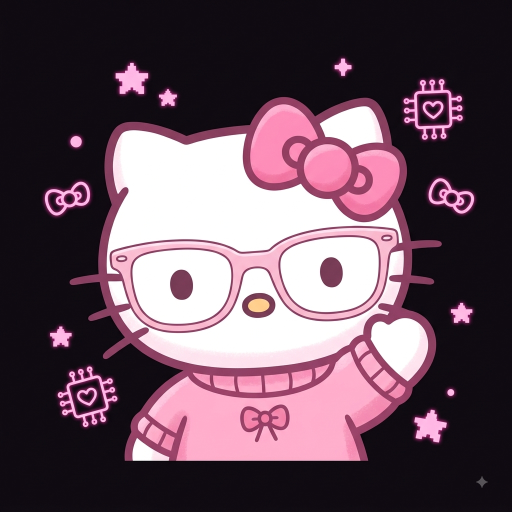
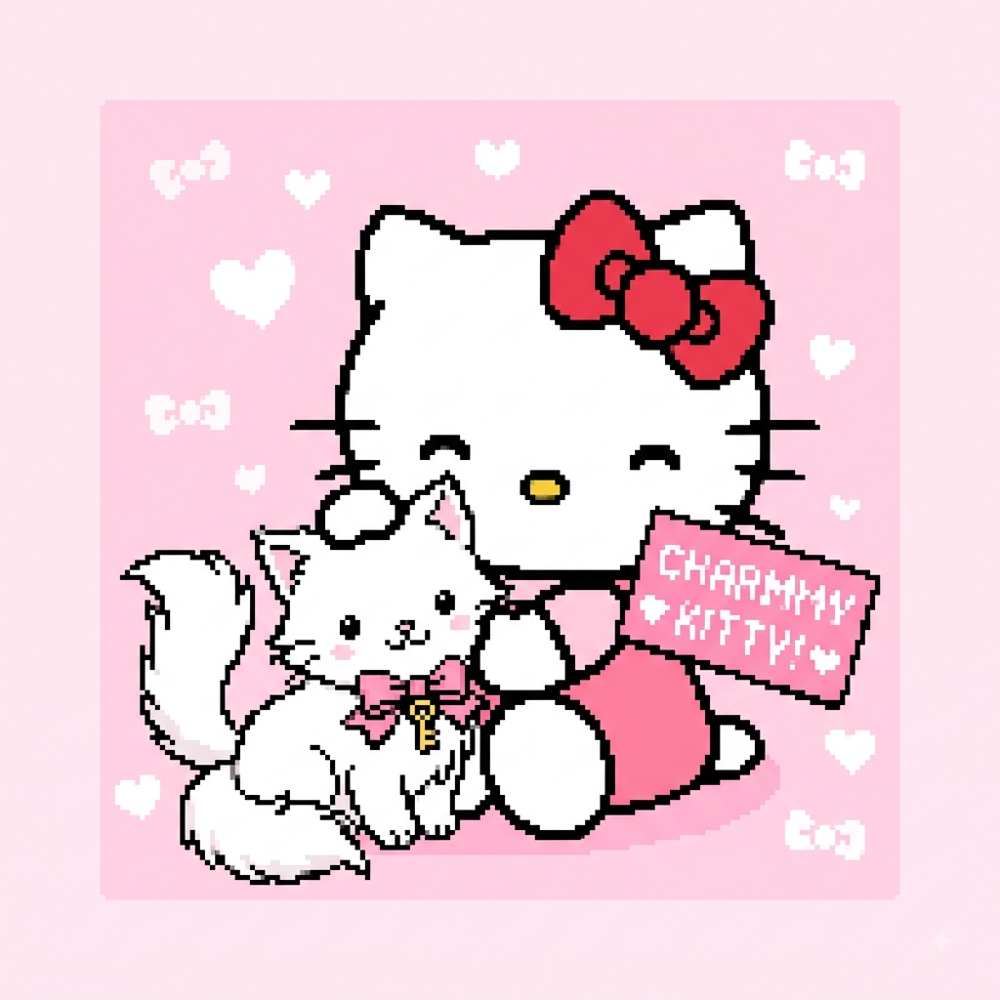
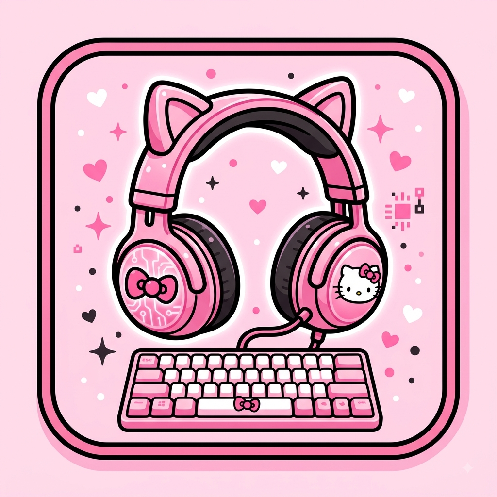
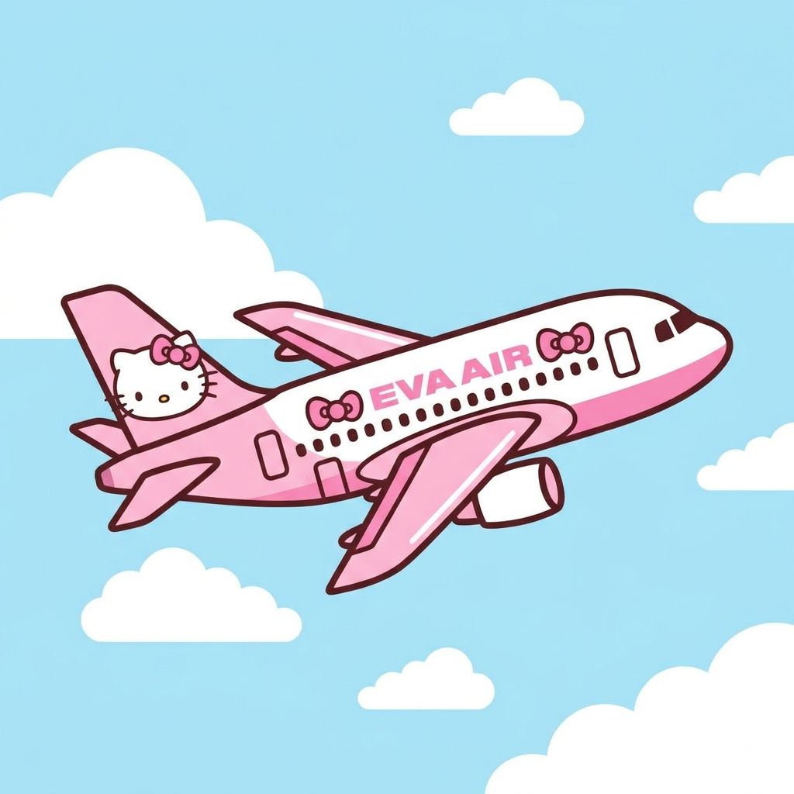
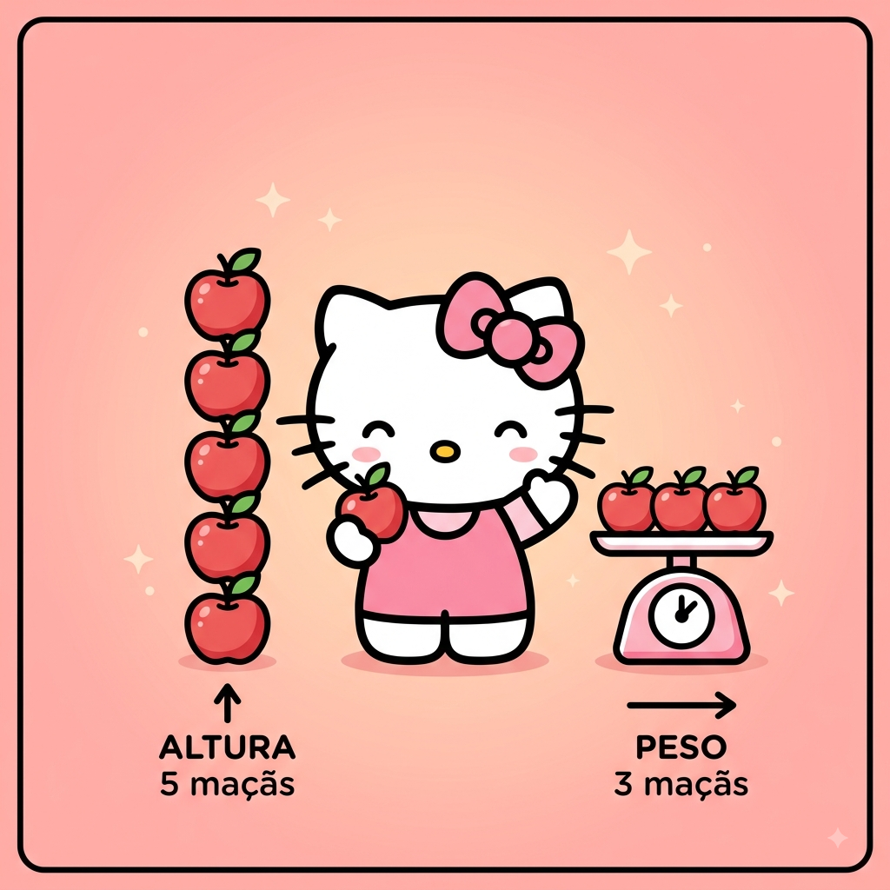

Boas-vindas ao meu Blog!
Por: Eloisa Oliveira de Matos
Sejam muito bem-vindos ao meu cantinho! Aqui vou compartilhar curiosidades incríveis sobre a Hello Kitty, cultura pop e a união entre o estilo kawaii e a tecnologia.
Compartilhando curiosidades, cultura fofa e novidades do universo Sanrio e tecnologia

Por: Eloisa Oliveira de Matos
Sejam muito bem-vindos ao meu cantinho! Aqui vou compartilhar curiosidades incríveis sobre a Hello Kitty, cultura pop e a união entre o estilo kawaii e a tecnologia.

Por: Eloisa Oliveira de Matos
A Hello Kitty foi criada em 1974 pela designer Yuko Shimizu para a empresa japonesa Sanrio. Sua primeira aparição foi em um porta-moedas de vinil e hoje ela é um ícone mundial!
Fonte: Sanrio Official

Por: Eloisa Oliveira de Matos
Uma das maiores curiosidades reveladas pela Sanrio é que a Hello Kitty é, na verdade, uma garotinha britânica chamada Kitty White! Ela até tem seu próprio gatinho de estimação, o Charmmy Kitty.
Fonte: Sanrio / Wikipédia

Por: Eloisa Oliveira de Matos
O estilo 'Kawaii Tech' mistura aparelhos eletrônicos com estética fofa. Teclados mecânicos rosa personalizados com a Hello Kitty e fones com orelhinhas são um enorme sucesso no mundo gamer e tech.
Fonte: Mundo Tech

Por: Eloisa Oliveira de Matos
A companhia aérea EVA Air possui aviões totalmente temáticos da Hello Kitty! Desde a pintura externa até as refeições, talheres e cartões de embarque, tudo tem o tema da personagem.
Fonte: EVA Air / Aviação Pop

Por: Eloisa Oliveira de Matos
Segundo a biografia oficial divulgada pela Sanrio, a altura da Hello Kitty equivale exatamente a 5 maçãs empilhadas e o seu peso é igual ao de 3 maçãs!
Fonte: Sanrio Official